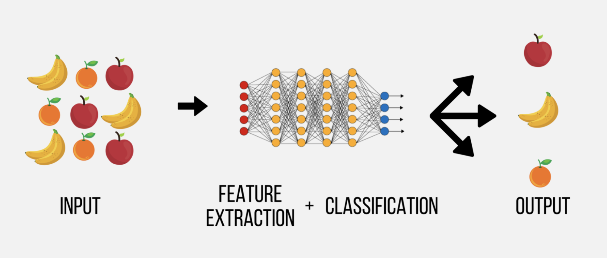

| behav | score |
|---|---|
| 0 | 1 |
| 1 | 2 |
| 2 | 2 |
| 3 | 3 |
| 4 | 4 |
| 5 | 4 |
ความรู้พื้นฐานเกี่ยวกับ ML
บทที่ 1 ความรู้พื้นฐานเกี่ยวกับการเรียนรู้ของเครื่อง
ปัจจุบันคอมพิวเตอร์ได้เข้ามามีบทบาทอย่างมากกับมนุษย์ โดยเข้ามามีส่วนช่วยเหลือ สนับสนุน หรือแม้กระทั่งทำงานแทนมนุษย์ให้หลาย ๆ งาน ส่วนประกอบสำคัญส่วนหนึ่งของคอมพิวเตอร์ที่จะขาดไปไม่ได้ในการดำเนินงาน/กิจกรรมต่าง ๆ คือโปรแกรมคอมพิวเตอร์
ที่ผ่านมากโปรแกรมคอมพิวเตอร์ถูกพัฒนาขึ้นเป็นจำนวนมาก รวมถึงศาสตร์ในด้านการพัฒนาโปรแกรมคอมพิวเตอร์ก็ถูกพัฒนาไปอย่างมากเช่นกัน เราอาจจำแนกส่วนประกอบของโปรแกรมคอมพิวเตอร์ได้เป็น 2 ส่วนได้แก่ ส่วนต่อประสานกับผู้ใช้ (user interface: UI) และส่วนประมวลผลหรือควบคุมการทำงานของโปรแกรมซึ่งในเชิงเทคนิคเรียกว่า อัลกอริทึม (algorithm) ของโปรแกรม ทั้งนี้ในโปรแกรมหนึ่ง ๆ อาจมีอัลกอริทึมมากกว่าหนึ่งตัวก็ได้
บทเรียนนี้จะกล่าวถึงภาพรวมของมโนทัศน์และคำศัพท์ที่เกี่ยวข้องกับศาสตร์การเรียนรู้ของเครื่องเพื่อเป็นพื้นฐานสำหรับการศึกษาในบทเรียนอื่น ๆ ต่อไป รายละเอียดมีดังนี้
1.1 What’s algorithms?
อัลกอริทึมคือกระบวนการในการดำเนินงานที่มีขั้นตอนอย่างชัดเจน โดยมีวัตถุประสงค์เพื่อทำงาน/แก้ปัญหาที่กำหนดให้สำเร็จ การใช้อัลกอริทึมในการทำงานนั้นไม่ได้จำกัดเฉพาะงานทางด้านคอมพิวเตอร์ หรือสถิติและวิทยาการข้อมุลเท่านั้น แต่ในชีวิตประจำวันเราก็มีการใช้อัลกอริทึมเพื่อดำเนินงานต่าง ๆ อยู่เป็นประจำ เช่น
การเดินทางจากบ้านไปยังร้านขายของสะดวกซื้อ งานดังกล่าวสามารถเขียนแยกแยะออกมาเป็นขั้นตอนการเดินทางโดยอาจเริ่มตั้งแต่การออกประตูบ้าน เลี้ยวขวา เดินตรงไป เมื่อพบสามแยกให้เลี้ยวขวาอีกครั้งจะพบร้านสะดวกซื้อ
การทอดไข่เจียวที่อาจเริ่มจากการตั้งไฟ ใส่น้ำมัน ตอกไข่ ตีไข่ ใส่เครื่องปรุง ทอดไข่ และนำไข่เจียวที่ได้เสริฟ
ปัจจุบันโลกได้ก้าวเข้าสู่ยุคที่ให้เครื่องจักรทำงานบางอย่างแทนมนุษย์ได้ ซึ่งเบื้องหลังการดำเนินการของเครื่องจักรต่าง ๆ จำเป็นต้องมีอัลกอริทึมที่ใช้สำหรับควบคุมการทำงาน การพัฒนาอัลกอริทึมดังกล่าวอาจทำได้สองวิธีการ วิธีการแรกเรียกว่า rule-based algorithm ที่ผู้พัฒนาเป็นผู้กำหนดขั้นตอนวิธีการทำงานและประมวลผลทั้งหมด เพื่อให้เป็นภาพของ rule-based algorithm ผู้อ่านลองพิจารณาตัวอย่างในรูปด้านล่าง
รูปข้างต้นเป็นปัญหาชื่อว่า 7-segment display วัตถุประสงค์คือต้องการพัฒนาโปรแกรมที่จะใช้จำแนกตัวเลขบนป้ายไฟแบบ Digital โดยบนป้ายไฟมีไฟ LED จำนวน 7 หลอด ได้แก่ A, B, C, D, E, F และ G การเปิด/ปิดไฟอย่างเหมาะสมตามตารางในรูป จะทำให้ได้ตัวเลข 0-9 บนป้ายไฟ
จากปัญหาข้างต้นการพัฒนาโปรแกรมสำหรับจำแนกตัวเลขบนป้าย (classifier) ด้วยวิธีการแบบ rule-based ผู้วิเคราะห์จะต้องมี sensor เพื่อตรวจจับการเปิด/ปิดไฟแต่ละตำแหน่งบนป้าย จากนั้นจึงพัฒนาโปรแกรมเพื่ออ่านค่าของตัวเลข โดยอัลกอริทึมแบบ rule-based อาจมีลักษณะเป็นการเขียนคำสั่งด้วยการใช้ IF…ELSE ดังนี้
การพัฒนา rule-based algorithms ไม่ได้จำเป็นต้องใช้แค่ if…else แต่เพียงอย่างเดียว แต่สามารถใช้กระบวนการทางคณิตศาสตร์เข้ามาช่วยในการสร้างได้ ลองพิจารณาตัวอย่างในกิจกรรมต่อไปนี้
1.2 กิจกรรม Rule-based algorithm
ข้อมูลในตาราง 1 ประกอบด้วยคะแนนสอบ (score) กับคะแนนพฤติกรรมการเรียนของนักเรียน (behav) ลองดำเนินการดังนี้
- ลองวิเคราะห์ความสัมพันธ์เบื้องต้นระหว่าง
scoreกับbehavความสัมพันธ์ระหว่างตัวแปรทั้งสองมีลักษณะเป็นอย่างไร - หากใช้วิธีการทางคณิตศาสตร์เพื่อสร้างสมการที่จะใช้เป็นตัวแทนความสัมพันธ์ที่พบในข้อ 1. จะได้สมการเป็นอย่างไร
- สมการที่สร้างได้จากข้อ 2. มีประสิทธิภาพในการทำนาย
scoreดีหรือไม่ อย่างไร
ตัวอย่างในข้างต้นแสดงให้เห็นว่า ในกรณีที่ข้อมูลนำเข้าไม่มีความคลาดเคลื่อนหรือมีความคลาดเคลื่อนอยู่ในระดับต่ำมาก ๆ การพัฒนาโปรแกรมด้วยวิธีการแบบ rule-based ก็สามารถทำได้อย่างมีประสิทธิภาพ อย่างไรก็ตามในปัญหาทั่วไปในโลกจริงเป็นการยากที่จะมีข้อมูลนำเข้าที่มีคุณสมบัติดังกล่าว ผู้อ่านลองพิจารณาปัญหา Handwriting Digit Recognition (Geron, 2019) ซึ่งเป็นปัญหาการจำแนกตัวเลขเช่นเดียวกับปัญหา 7-segment display ข้างต้น แต่มีความแตกต่างกันคือ input feature สำหรับปัญหานี้จะเป็นลายมือของคนจริง ๆ ไม่ใช่ข้อมูลแบบ binary ของไฟ LED
จากรูปข้างต้นจะเห็นว่าการเขียนกฎเกณฑ์แบบ rule-based เพื่อจำแนกตัวเลขในรูปข้างต้นทำได้ยากมากและเป็นไปแทบไม่ได้เลยที่จะพัฒนาอัลกอริทึมแบบ rule-based สำหรับจำแนกตัวเลขจากลายมือดังกล่าวได้อย่างมีประสิทธิภาพ ดังนั้นการที่จะพัฒนาโปรแกรมให้ทำงานแทนมนุษย์ได้จริง ๆ นั้น วิธีการแบบบ rule-based เป็นวิธีการที่ยังมีข้อจำกัดอยู่มาก ทั้งนี้เพราะเป็นวิธีการขาดความยืดหยุ่นและไม่สามารถใช้ได้ดีหากข้อมูลนำเข้ามีความแตกต่างไปจากกฎเกณฑ์ที่วางเอาไว้แม้จะเพียงเล็กน้อย จึงมีแนวโน้มที่จะเกิดความคลาดเคลื่อนสูงมากเมื่อนำโปรแกรมแบบ rule-based ไปใช้ในสถานการณ์ทั่วไป
วิธีการที่สองเรียกว่า machine learning-based ที่เป็นวิธีการสมัยใหม่และปัจจุบันถูกใช้เป็นวิธีการหลักวิธีหนึ่งในการพัฒนาโปรแกรม การเรียนรู้ของเครื่อง เป็นศาสตร์ย่อยแขนงหนึ่งภายใต้ศาสตร์ทางด้านสถิติและวิทยาการข้อมูล ซึ่งเกี่ยวข้องกับการพัฒนาและใช้อัลกอริทึม ที่มีความสามารถในการเรียนรู้สารสนเทศจากข้อมูลได้ แล้วนำสารสนเทศดังกล่าวมาใช้งาน อัลกอริทึมในกลุ่มนี้ถูกใช้มากสำหรับการสร้างโมเดลเพื่อทำนาย จำแนก หรือตัดสินใจ โดยโมเดลที่สร้างขึ้นจะมีความแตกต่างไปจากโมเดลที่ได้จากอัลกอริทึมแบบ rule-based ตรงที่มีการใช้วิธีการทางสถิติและความน่าจะเป็นเข้ามาช่วยจัดการกับความคลาดเคลื่อนที่อาจเกิดขึ้นในข้อมูลนำเข้า โมเดลที่พัฒนาขึ้นจึงมีความยืดหยุ่นและมีประสิทธิภาพมากกว่าโมเดลที่พัฒนาด้วยอัลกอรทึมแบบ rule-based ประสิทธิภาพดังกล่าวไม่ได้หมายถึงประสิทธิภาพในการทำนายแต่เพียงอย่างเดียว แต่ยังหมายถึงประสิทธิภาพในการพัฒนาโมเดลด้วย
รูปต่อไปนี้แสดงความแตกต่างระหว่าง rule-based กับ ML-based algorithm
ตัวอย่างต่อไปนี้แสดงการใช้ ML-based เพื่อจำแนกตัวเลขจากลายมือในปัญหา Handwriting Digit Recognition ข้างต้น
1.3 AI vs ML vs DL
ปัจจุบันมีการใช้คำว่า AI, ML และ DL แทนกันไปมาจนบางครั้งเหมือนว่าจะเป็นคำเดียวกัน ในความเป็นจริงทั้งสามคำดังกล่าวม่ได้เป็นสิ่งเดียวกันเลยทีเดียว แต่มีทั้งส่วนที่เหมือนและแตกต่างกัน รายละเอียดมีดังนี้
AI ย่อมาจาก Artificial Intelligent เป็นเทคนิคหรือวิธีการที่นักวิทยาการข้อมูลใช้เพื่อพัฒนาโปรแกรมคอมพิวเตอร์ รวมถึงหุ่นยนต์หรือจักรกลที่สามารถเลียนแบบการทำงานต่าง ๆ ของมนุษย์ได้ AI จะมีความสามารถในการทำงานใกล้เคียงหรือดีกว่ามนุษย์ ทั้งความสามารถในการจดจำ จำแนก และตัดสินใจดำเนินงานเองโดยอาศัยข้อมูลที่เป็นไปได้ทั้งข้อมูลตัวเลข ข้อความ รูปภาพ และเสียง ตัวอย่างของ AI เช่น รถยนต์หรือยานพาหนะไร้คนขับ, AlphaGo - DeepMind, Chatgpt เป็นต้น
Machine Learning (ML) เป็นกลุ่มของเทคนิคหรือศาสตร์ย่อยแขนงนึงภายใต้ AI ที่เกี่ยวข้องกับการใช้ประยุกต์ใช้ทฤษฎีทางสถิติและคณิตศาสตร์เพื่อเรียนรู้หรือสกัดสารสนเทศจากข้อมูล สารสนเทศดังกล่าวสามารถนำมาใช้ได้หลายลักษณะ ทั้งการบรรยาย อธิบาย ทำนาย และตัดสินใจ ML ถือเป็นส่วนประกอบที่สำคัญที่สนับสนุนการทำงานของ AI
Deep Learning (DL) เป็นแขนงย่อย (subdivision) ของ ML ที่เกี่ยวข้องกับการใช้เทคนิคที่เรียกว่าเครือข่ายประสาทเทียม (artificial neural network: ANN) ที่มีความลึกของเครือข่ายหลายชั้นเพื่อเรียนรู้หรือสกัดสารสนเทศจากข้อมูลและใช้ในวัตถุประสงค์หลักคือเพื่อทำนาย/จำแนกค่าสังเกตของตัวแปรตาม นอกจากนี้ลักษณะเฉพาะตัวที่โดดเด่นของ DL คือเครือข่ายประสาทเทียมที่ใช้ในการเรียนรู้นั้นถูกพัฒนาขึ้นเลียนแบบการทำงานของเซลล์เครือข่ายสมองของมนุษย์ การเรียนรู้ของเครื่องที่ใช้ DL จึงสามารถเรียนรู้ข้อมูลที่มีความซับซ้อนเช่น ข้อความ ภาพ และเสียงได้มีประสิทธิภาพมากกว่าการใช้เทคนิค ML แบบปกติ

จากความหมายในข้างต้นจะเห็นว่า DL ถือเป็น machine learning ตัวหนึ่งที่ใช้ในวัตถุประสงค์เพื่อทำนายหรือจำแนกค่าสังเกตของตัวแปรตาม เมื่อเปรียบเทียบความแตกต่างระหว่าง machine learning algorithm ในกลุ่มที่ใช้สำหรับทำนาย กับ DL มีความแตกต่างหนึ่งที่เห็นได้อย่างชัดเจนคือในส่วนของกระบวนการเรียนรู้ของโมเดล ดังรูปด้านล่าง


จากรูปข้างต้นจะเห็นว่า ทั้ง ML และ DL เป็นเครื่องมือที่มีวัตถุประสงค์เดียวกันคือเพื่อทำนาย หรือจำแนกประเภทของหน่วยข้อมูล โดยใช้ข้อมูลจากตัวแปรอิสระที่มี การพัฒนาโมเดลทำนายมีกระบวนการที่จะต้อง train และตรวจสอบประสิทธิภาพของโมเดลเหมือนกัน แต่ส่วนที่มีความแตกต่างกันอย่างชัดเจนระหว่าง ML กับ DL คือ การพัฒนาโมเดลประเภท ML ผู้วิเคราะห์จะต้องเป็นผู้ดำเนินการสำรวจ คัดเลือก รวมทั้งเตรียมข้อมูลของตัวแปรอิสระที่จะใช้ในโมเดลทำนายด้วยตนเอง เรียกขั้นตอนนี้ว่า feature extraction ในขณะที่ DL เป็นโมเดลแบบเครือข่ายประสาทเทียมที่มีชั้นของการเรียนรู้หรือประมวลผลข้อมูลหลายชั้น ทำให้สามารถผนวกส่วนของการทำ feature extraction และส่วนของการทำนายเอาไว้ภายในโมเดล DL เดียวกันได้ และมีแนวโน้มที่จะช่วยให้ผู้วิเคราะห์สามารถใช้ประโยชน์ได้จากข้อมูลที่มีปริมาณมาก ๆ ได้อย่างสูงสุด
Deep Learning มักนำไปประยุกต์ใช้
1.4 Data Analysis vs Data Analytics
คำศัพท์ที่ควรทราบเมื่อศึกษาหัวข้อเกี่ยวกับวิทยาการข้อมูลหรือการเรียนรู้ของเครื่องคือคำว่า data analysis และ data analytics เราอาจเห็นหลายที่ใช้คำศัพท์สองคำทดแทนกันไปมาเช่นเดียวกับ AI, ML หรือ DL ข้างต้น แต่ในความเป็นจริงทั้งสองคำนี้มีมโนทัศน์ที่แตกต่างกัน แต่มีความสัมพันธ์ซึ่งกันและกัน
Data Analysis เป็นกระบวนการทางสถิติและวิทยาการข้อมูลที่เกี่ยวข้องกับการเก็บรวบรวมข้อมูล การจัดระเบียบและจัดกระทำข้อมูล และการวิเคราะห์ข้อมูล โดยการวิเคราะห์ข้อมูลนี้มีวัตถุประสงค์หลักเพื่อข้อสรุปสำหรับการบรรยายหรืออธิบายตัวแปรหรือความสัมพันธ์ระหว่างตัวแปรภายในประชากรที่ศึกษา มักใช้ตอบคำถามในลักษณะ
ที่ผ่านมาเกิดอะไรขึ้น?
สิ่งที่เกิดขึ้นนั้นเป็นอย่างไร?
เพราะอะไรถึงเป็นแบบนั้น?
จะเห็นว่าลักษณะของ data analysis เน้นการอธิบายปรากฏการณ์หรือความเป็นไปในอดีตเป็นหลัก ตัวอย่างการใช้ Data Analysis เช่นการวิเคราะห์สถิติบรรยาย การเปรียบเทียบค่าเฉลี่ย การวิเคราะห์ความสัมพันธ์ระหว่างตัวแปรด้วย correlation หรือ regression หรือการวิเคราะห์ความสัมพันธ์เชิงสาเหตุด้วย structural equation model เป็นต้น
Data Analytics เป็นกระบวนการที่ผู้วิเคราะห์นำข้อมูลที่มีมาใช้วิเคราะห์ปรากฏการณ์หรือการำเนินงานที่เกี่ยวข้อง เพื่อสร้างเป็นแบบจำลองหรือโมเดล แล้วนำโมเดลที่สร้างขึ้นนี้ไปใช้งานในเชิงการทำนาย การตัดสินใจ หรือให้ข้อเสนอแนะจากข้อมูลสำหรับเหตุการณ์ที่จะเกิดขึ้นในอนาคต กระบวนการทำงานของ data analytic ส่วนใหญ่คล้ายกับ data analysis กล่าวคือมีส่วนของกระบวนการที่จะต้องจัดการเก็บรวบรวมข้อมูล และจัดเตรียมข้อมูลเหมือนกัน แต่ความแตกต่างคือส่วนของการวิเคราะห์ที่ไม่ได้เน้นการอธิบายความเป็นไปในอดีต แต่เน้นการนำโมเดลที่สร้างขึ้นไปทำนาย ช่วยคิดหรือตัดสินใจแทนมนุษย์ การวิเคราะห์ข้อมูลทางด้าน data analytics ส่วนใหญ่จะมีการใช้อัลกอริทึมการเรียนรู้ของเครื่องเข้ามาใช้
1.5 Types of Machine Learning?
การเรียนรู้ของเครื่อง (ML) เป็นศาสตร์ย่อยแขนงหนึ่งภายใต้ศาสตร์ทางด้านสถิติและวิทยาการข้อมูล ซึ่งเกี่ยวข้องกับการใช้อัลกอริทึม (algorithms) ในการเรียนรู้/ค้นหาความรู้จากข้อมูล แล้วนำความรู้ที่ได้มาใช้งานตั้งแต่การบรรยายสภาพของข้อมูล (descriptive) การวินิจฉัย (diagnostic) เพื่อหาสาเหตุหรือปัจจัยที่ก่อให้เกิดผลลัพธ์ที่สนใจ การทำนาย (predictive) เพื่อสร้างโมเดลที่เรียนรู้ความสัมพันธ์ในข้อมูลเพื่อทำนายผลลัพธ์ของตัวแปรที่สนใจ ผลลัพธ์ที่ได้จากการทำนายนี้สามารถนำมาโมเดลเพื่อช่วยวางแผน/ตัดสินใจ (prescriptive) ดำเนินการเพื่อนำไปสู่ผลลัพธ์ที่คาดหวัง
เทคนิคการเรียนรู้ของเครื่องอาจจำแนกได้เป็น 3 ประเภท ตามวัตถุประสงค์หรือความสามารถของอัลกอริทึมการเรียนรู้ ได้แก่
การเรียนรู้ที่มีการชี้นำ (supervised learning)
การเรียนรู้แบบไม่มีการชี้นำ (unsupervised learning)
การเรียนรู้แบบที่มีการเสริมแรง (reinforcement learning)

Supervised Learning
ผู้วิเคราะห์จะใช้ supervised learning เมื่อมีวัตถุประสงค์ที่ต้องการสร้างโมเดลทำนาย/จำแนกค่าสังเกตของตัวแปรตามด้วยข้อมูลค่าสังเกตของตัวแปรอิสระ โดย supervised learning เป็นกลุ่มของอัลกอริทึมที่จะเรียนรู้รูปแบบความสัมพันธ์ระหว่างตัวแปรอิสระกับตัวแปรตาม และใช้รูปแบบความสัมพันธ์ที่เรียนรู้จากข้อมูลในอดีตนี้ในการทำนายข้อมูลที่ไม่ทราบค่าที่จะเกิดขึ้นในอนาคต เช่น
การทำนายสถานะการเป็นหนี้ของลูกค้า (ลูกหนี้ชั้นดี ลูกหนี้ปกติ ลูกหนี้เสีย) โดยอิงกับข้อมูลส่วนตัว ข้อมูลที่เกี่ยวข้องกับเครดิตทางการเงิน และข้อมูลพฤติกรรมการดำเนินชีวิต
ผู้พัฒนาคอสเรียนออนไลน์ใช้ supervised learning เพื่อทำนายผลการเรียนของนักเรียน หรือแนวโน้มการ drop out ของนักเรียนในคอสเรียน โดยอิงจากพฤติกรรมการเรียนที่แสดงในระบบการเรียนรู้ออนไลน์
การพัฒนาระบบวินิจฉัยความยึดมั่นผูกพันของนักเรียนด้วยการรู้จำใบหน้าโดยใช้การเรียนรู้เชิงลึก
การที่จะใช้ supervised learning ได้นั้นผู้วิเคราะห์ยังจำเป็นต้องมีชุดข้อมูลต้นแบบที่ภายในชุดข้อมูลประกอบด้วยข้อมูลของตัวแปรตามหรือผลลัพธ์ที่ต้องการทำนาย และตัวแปรอิสระหรือข้อมูลที่จะใช้เป็นตัวทำนายผลลัพธ์ที่ต้องการดังกล่าว ในเชิงเทคนิคจะเรียกชุดข้อมูลต้นแบบดังกล่าวว่า ชุดข้อมูลฝึกหัด (training dataset) นอกจากนี้ supervised learning ยังจำแนกเป็นประเภทย่อยได้อีก 2 ประเภทตามลักษณะของตัวแปรตาม ได้แก่ regression และ classification
Regression เป็นโมเดลสำหรับทำนายตัวแปรตามเชิงปริมาณ
Classification เป็นโมเดลสำหรับทำนายตัวแปรตามแบบจัดประเภท
Unsupervised Learning
ภาษาไทยอาจใช้คำว่าการเรียนรู้แบบไม่มีการชี้นำ การเรียนรู้ประเภทนี้มีความแตกต่างจาก supervised learning กล่าวคือชุดข้อมูลฝึกหัดไม่จำเป็นต้องมีค่าสังเกตของตัวแปรตาม และวัตถุประสงค์ของการใช้ unsupervised learning คือการสร้างหรือสกัดสารสนเทศออกมาจากข้อมูล ซึ่งอาจจำแนกได้เป็น การจัดกลุ่ม (clustering) และการหาความสัมพันธ์ (association)
Reinforcement Learning
เป็นอัลกอริทึมการเรียนรู้ (เรียกว่า agent) ที่เรียนรู้ด้วยการใช้ feedback ที่มีการให้รางวัล (reward) เมื่ออัลกอริทึมสามารถทำงานได้สำเร็จ และมีการทำโทษ (punishments) เมื่อล้มเหลว ผู้พัฒนาอัลกอริทึมประเภทนี้จะให้ agent ทำการเรียนรู้งานที่การให้ feedback ดังกล่าวแบบทวนซ้ำจนกระทั้งอัลกอริทึมสามารถทำงานที่กำหนดได้อย่างมีประสิทธิภาพตามที่ต้องการ
บทที่ 2 ความรู้พื้นฐานในการพัฒนา Supervised Learning
Supervised learning เป็นการเรียนรู้ของเครื่องที่มีการนำมาประยุกต์ใช้งานอย่างแพร่หลาย บทเรียนนี้จะกล่าวถึงมโนทัศน์ที่สำคัญของกระบวนการพัฒนา supervised learning model ทั้งในกลุ่มของ regression และ classification models
2.1 ติดตั้ง R และ RStudio
เครื่องมือที่สามารถใช้จัดการข้อมูลและพัฒนาโมเดลการเรียนรู้ของเครื่องในปัจจุบันมีหลายตัว R เป็นโปรแกรมภาษาหนึ่งที่มีความสามารถสูงในการพัฒนาโมเดลการเรียนรู้ของเครื่องดังกล่าว ก่อนจะไปสู่บทเรียนในหัวข้อถัดไป ขอให้ผู้อ่านดาวน์โหลดและติดตั้ง R และ RStudio IDE ก่อน โดยดาวน์โหลด R ที่นี่ และดาวน์โหลด Rstudio ที่นี่
ปัจจุบัน RStudio เป็น IDE ที่ค่อนข้างครบเครื่องสำหรับผู้ใช้ R และสามารถใช้เขียนภาษาอื่น ๆ ได้หลายตัวทั้ง Python, HTML, Markdown, Stan เป็นต้น ดังนั้นในกรณีที่ต้องการใช้ Python อาจใช้บน RStudio เลยก็ได้ อย่างไรก็ตามการใช้งาน Python บน RStudio เป็นการใช้งานผ่านตัวแปลงคือ package reticulate จึงอาจทำให้การประมวลผลช้ากว่าการทำงานบน Editor ของ Python โดยเฉพาะ
2.2 ติดตั้ง Anaconda
Anaconda เป็นชุดโปรแกรมที่รวบรวม package การทำงานสำหรับนักสถิติและวิทยาการข้อมูล โดยมีทั้งเครื่องมือสำหรับภาษา R และ Python โดย Anaconda จะรวบรวม package ที่เกี่ยวข้องสำหรับการทำงานทางด้านวิทยาการข้อมุลเอาไว้มากกว่า 1,000 ตัว และสามารถติดตั้งได้ทั้งบน Windows, Linux และ Mac OS ซึ่งช่วยอำนวยความสะดวกให้กับผู้ใช้ โดยไม่ต้องดาวน์โหลดและติดตั้ง package พื้นฐานทีละตัวด้วยตนเอ เช่น pandas, numpy, matplotlib และ seaborn ข้อควรระวังคือ Anaconda นั้นรวบรวม package เอาไว้เป็นจำนวนมากการติดตั้งจึงค่อนข้างเปลืองพื้นที่ HDD ของเครื่องคอมพิวเตอร์ สำหรับผู้ที่มีพื้นที่จำกัดอาจเลี่ยงไปติดตั้ง Miniconda หรือใช้ Python บน Google Colab ขั้นตอนการติดตั้ง Anaconda ให้ดำเนินการดังนี้
- ดาวน์โหลดและติดตั้ง Anaconda ได้ที่ https://www.anaconda.com/
- ดำเนินการติดตั้งตามตัวช่วยเหลือการติดตั้ง
- ถ้ามีการถามว่าต้องการติดตั้ง VS Code หรือไม่ สามารถเลือกติดตั้งหรือไม่ก็ได้ แต่แนะนำว่าติดตั้งไว้ดีกว่าเพราะมีประโยชน์ในการเขียน Python
- เมื่อติดตั้งเสร็จให้กดเปิด Anaconda Navigator ขึ้นมา หน้าต่างนี้จะเหมือนเป็น Hub ที่รวบรวมโปรแกรมต่าง ๆ สำหรับการทำงาน เช่น Jupyter Notebook, JupyterLab ซึ่งเป็น gen ใหม่ของ Jupyter Notebook, VS Code ซึ่งเราสามารถใช้ Editor พวกนี้ในการเขียน Python ได้
2.3 กิจกรรม My First Regression
จากตัวอย่างข้อมูลของกิจกรรมในหัวข้อ 1.2 (1.2 กิจกรรม Rule-based algorithm) ในหัวข้อนี้เราจะสร้างโมเดลทำนายตัวใหม่โดยจะใช้อัลกอริทึมการเรียนรู้ของเครื่องเป็นเครื่องมือในการพัฒนา จากกิจกรรม 1.2 เราทราบแล้วว่าความสัมพันธ์ระหว่างตัวแปรในชุดข้อมูลเป็นความสัมพันธ์เชิงเส้นตรง ดังนั้นกิจกรรมนี้เราจะใช้อัลกอริทึม linear regression ในการพัฒนาโมเดลทำนาย
อัลกอริทึม linear regression เป็นอัลกอริทึมทางสถิติที่ใช้สำหรับทำนายแนวโน้มค่าสังเกตของตัวแปรตามที่ไม่ทราบค่าโดยอิงกับค่าสังเกตของตัวแปรอิสระที่ทราบค่า การเรียนรู้ของ linear regression จะพยายามสร้างสมการเส้นตรงที่ดีที่สุด (best linear equation) ที่สามารถใช้เป็นตัวแทนความสัมพันธ์ระหว่างตัวแปรตามกับตัวแปรอิสระที่พบในชุดข้อมูล ในเชิงเทคนิคการหาสมการเส้นตรงด้วยอัลกอริทึมนี้เป็นการเฟ้นค่าหาของพารามิเตอร์ภายในสมการเส้นตรง ได้แก่ พารามิเตอร์จุดตัดแกน y และพารามิเตอร์ความชัน ที่ทำให้สมการเส้นตรงมีความคลาดเคลื่อนในการทำนายต่ำที่สุด โดยที่ความคลาดเคลื่อนในการทำนายดังกล่าวคำนวณจากค่าผลรวมของความคลาดเคลื่อนกำลังสอง (sum squared error: SSE) สามารถคำนวณได้ดังนี้
\[ SSE = \sum_{i=1}^n(y_i-\hat{y}_i)^2 \]
เมื่อ \(\hat{y}_i\) เป็นผลรวมเชิงเส้น (linear combination) ของตัวแปรอิสระที่ใช้ทำนายตัวแปรตาม
Fitting Linear Regression using lm()
จากข้อมูลในกิจกรรม 1 สามารถใช้อัลกอริทึม linear regression เพื่อหาโมเดลทำนายที่เหมาะสมด้วยโปรแกรม R ได้ดังนี้
# import data
x<-c(0,1,2,3,4,5)
y<-c(1,2,2,3,4,4)
dat<-data.frame(behav = x, score = y)
# estimate linear regression model
fit_linear<-lm(y~x, data=dat)
summary(fit_linear)
Call:
lm(formula = y ~ x, data = dat)
Residuals:
1 2 3 4 5 6
-0.09524 0.27619 -0.35238 0.01905 0.39048 -0.23810
Coefficients:
Estimate Std. Error t value Pr(>|t|)
(Intercept) 1.09524 0.23425 4.675 0.00948 **
x 0.62857 0.07737 8.124 0.00125 **
---
Signif. codes: 0 '***' 0.001 '**' 0.01 '*' 0.05 '.' 0.1 ' ' 1
Residual standard error: 0.3237 on 4 degrees of freedom
Multiple R-squared: 0.9429, Adjusted R-squared: 0.9286
F-statistic: 66 on 1 and 4 DF, p-value: 0.001249Evaluation Metrics
วัตถุประสงค์หลักของการพัฒนาโมเดลทำนายข้างต้นคือเพื่อทำนายคะแนนสอบด้วยพฤติกรรมการเรียนของนักเรียน การจะนำโมเดลดังกล่าวไปใช้จึงจำเป็นจะต้องตรวจสอบประสิทธิภาพการทำนายของโมเดลดังกล่าวก่อน
เนื่องจากโมเดลนี้เป็น supervised learning model ประเภท regression การตรวจสอบประสิทธิภาพการทำนายจึงควรเป็นการเปรียบเทียบความสอดคล้องกันระหว่างค่าทำนายกับค่าจริงของ score ในเชิงเทคนิคมีเกณฑ์พิจารณาที่เรียกว่า evaluation metric สำหรับ regression model อยู่หลายตัว โดยในบทเรียนนี้จะกล่าวถึง 2 ตัวได้แก่ RMSE และ R squared รายละเอียดมีดังนี้
Root Mean Squared Error (RMSE)
ในทางทฤษฎีค่า RMSE มีความหมายเป็นค่าคลาดเคลื่อนในการทำนายโดยเฉลี่ยของโมเดล สามารถคำนวณได้จากสูตร
\[ RMSE = \sqrt\frac{\sum_{i=1}^n(y_i-\hat{y}_i)^2}{n} \]
Coeffcient of Determination (R squared)
ส่วน R squared มีความหมายเป็นสัดส่วนของความผันแปรที่ร่วมกันระหว่างค่าจริงของตัวแปรตามกับค่าทำนายของตัวแปรตามที่ได้จากโมเดลทำนาย การคำนวณค่า R squared สามารถทำได้ง่าย ๆ ด้วยการหาค่ากำลังสองของสัมประสิทธิ์สหสัมพันธ์ระหว่างค่าจริงกับค่าทำนายของตัวแปรตามดังกล่าว
\[ R^2=Corr(y,\hat{y})^2 \]
จะเห็นว่า evaluation metric ทั้งสองล้วนเป็นการเปรียบเทียบความแตกต่างหรือความสอดคล้องระหว่างค่าจริงของตัวแปรตามกับค่าทำนายที่ได้จากโมเดลทำนาย การคำนวณค่าของ metric ดังกล่าวสามารถเขียนคำสั่งใน R ได้ดังนี้
# calculate prediction values
pred<-predict(fit_linear, newdata = dat)
pred # predicted value 1 2 3 4 5 6
1.095238 1.723810 2.352381 2.980952 3.609524 4.238095 # calculate rmse value
sqrt(mean((y-pred)^2)) #rmse[1] 0.264275# calculate r squared value
cor(pred, y)^2 #rsq[1] 0.9428571R squared plot
R squared plot เป็นแผนภาพการกระจายที่ plot ระหว่างค่าทำนาย (แกน Y) กับค่าจริง (แกน X) และเปรียบเทียบแนวโน้มของคู่อันดับกับกล่าวกับเส้นตรงอ้างอิง \(y=x\)
# create R squared plot
plot(y, pred, pch=16, xlab = "actual score", ylab="predicted score")
abline(a=0, b=1, lty=3, col="steelblue")ผลการพัฒนา linear regression ข้างต้นได้ข้อสรุปว่าโมเดลทำนายที่พัฒนาขึ้นมีประสิทธิภาพสูงมากในการทำนายคะแนนของนักเรียน (ผู้อ่านเห็นด้วยกับข้อความนี้หรือไม่? เพราะเหตุใด?)
2.4 กิจกรรม My First Classification
กิจกรรมนี้จะแสดงตัวอย่างการสร้างโมเดลจำแนก (classfication model) ชุดข้อมูลที่ใช้่เป็นตัวอย่างในกิจกรรมนี้จะใช้ชุดข้อมูล mmreg.sav โดยสามารถดาวน์โหลดได้ที่นี่
กิจกรรมนี้จะสร้างโมเดลจำแนกผลการเรียนวิชาคณิตศาสตร์ (สอบผ่าน vs สอบตก) โดยใช้ตัวแปรอิสระได้แก่ เพศ (female) และแรงจูงใจในการเรียน (motivation) ทั้งนี้ก่อนการดำเนินการขอให้ผู้อ่านแปลงค่าของตัวแปร math ให้เป็นแบบ binary response ก่อน โดยใช้คำสั่งดังนี้
# importing mmreg.sav into dat
library(haven)
dat <- read_spss("mmreg.sav")
# manipulating response variable "math"
dat <- dat%>%mutate(
math_binary = factor(ifelse(math>50,1,0),
labels=c("fail","pass"))
)
table(dat$math_binary)
fail pass
266 334 Fitting Logistic Regression Model using glm()
สำหรับอัลกอริทึมการเรียนรู้ที่จะใช้ในกิจกรรมนี้จะเลือกใช้ logistic regression ซึ่งเป็นอัลกริทึมพื้นฐานที่เรียนในรายวิชาสถิติพื้นฐานแล้ว การ fit logistic regression บน R สามารถทำได้หลายวิธีการ โดยมีขั้นตอนการดำเนินงานที่คล้ายกับการ fit linear regression โดยจะใช้ฟังก์ชัน glm() แทน lm() คำสั่งต่อไปนี้แสดงการ fit binary logistic regression ด้วยโปรแกรม R จากชุดข้อมูลดังกล่าว
fit_logistic <- glm(math_binary ~ female + motivation,
data = dat,
family = "binomial")
summary(fit_logistic)
Call:
glm(formula = math_binary ~ female + motivation, family = "binomial",
data = dat)
Deviance Residuals:
Min 1Q Median 3Q Max
-1.4960 -1.2290 0.8893 1.0177 1.4228
Coefficients:
Estimate Std. Error z value Pr(>|z|)
(Intercept) -0.2931 0.1951 -1.502 0.133
female -0.2674 0.1691 -1.582 0.114
motivation 1.0166 0.2468 4.119 3.8e-05 ***
---
Signif. codes: 0 '***' 0.001 '**' 0.01 '*' 0.05 '.' 0.1 ' ' 1
(Dispersion parameter for binomial family taken to be 1)
Null deviance: 824.05 on 599 degrees of freedom
Residual deviance: 805.30 on 597 degrees of freedom
AIC: 811.3
Number of Fisher Scoring iterations: 4สมการถดถอยแบบ logistic ในข้างต้นสามารถเขียนได้ดังนี้
\[ P(math=1|female,\ motivation)=\frac{exp(-0.2931+-0.2674female+1.0166mov)}{1+exp(-0.2931+-0.2674female+1.0166mov)} \]
แสดงว่าค่าทำนายของสมการข้างต้นเป็นค่าความน่าจะเป็นที่จะสอบผ่านเมื่อกำหนดค่าของตัวแปรอิสระ การจะใช้โมเดลดังกล่าวเพื่อจำแนกว่านักเรียนแต่ละคนมีแนวโน้มจะสอบผ่านหรือตกจะต้องแปลงค่าความน่าจะเป็นดังกล่าวให้เป็นประเภทหรือค่าสังเกตของตัวแปรตามแบบจัดประเภท การแปลงค่าความน่าจะเป็นนี้สามารถทำได้โดยกำหนดคะแนนจุดตัดของค่าความน่าจะเป็นสำหรับแบ่งประเภทของหน่วยข้อมูลระหว่างสอบผ่านและสอบตก (เชิงเทคนิคเรียกว่าค่า threshold)
สมมุติว่ากำหนดค่า threshold = 0.5 สามารถคำนวณค่าทำนายผลการสอบรายวิชาคณิตศาสตร์ได้ดังนี้
# calculate predicted probabilities
pred_prob <- predict(fit_logistic,
type="response",
newdata = dat)
summary(pred_prob) Min. 1st Qu. Median Mean 3rd Qu. Max.
0.3634 0.5106 0.5958 0.5567 0.6121 0.6734 # calculate predicted response values
pred_val <- factor(ifelse(pred_prob>0.5,"pass","fail"))
# assign predicted response values into dat dataframe
dat$pred_prob <- pred_prob
dat$pred_val <- pred_val
table(dat$pred_val)
fail pass
120 480 Evaluation Metrics
Evaluation metric สำหรับ classification model มีหลายตัว ในหัวข้อนี้จะกล่าวถึงบางตัวก่อน
Confusion Matrix
confusion matrix ที่เป็นเมทริกซ์เปรียบเทียบระหว่างค่าทำนายกับค่าจริงดังตัวอย่างในรูปด้านล่าง
การคำนวณ confusion matrix ใน R สามารถดำเนินการได้หลายวิธีการ วิธีการหนึ่งคือการใช้ฟังก์ชัน table() เพื่อแจกแจงความถี่ระหว่างค่าทำนายกับค่าจริง ดังนี้
table(dat$pred_val, dat$math_binary)
fail pass
fail 65 55
pass 201 279confusion matrix เป็นเครื่องมือสำหรับที่ใช้ประเมินประสิทธิภาพการทำนายของโมเดลประเภท classification models รูปด้านล่างแสดงการเปรียบเทียบ confusion matrix ระหว่าง logistic regression model กับ random forest model ผู้อ่านคิดว่าโมเดลใดมีแนวโน้มจะมีประสิทธิภาพในการทำนายสูงกว่ากัน
Accuracy (Hit Rate)
บาง package อาจเรียว่า balance accuracy ดัชนีตัวนี้เป็นค่าบ่งชี้ความแม่นยำในการทำนายโดยตรงของโมเดลโดยมีค่าเท่ากับสัดส่วนของเคสที่ทำนายถูกทั้งหมดเทียบกับเคสทั้งหมดที่ทำนาย ดังนี้
\[ Accuracy=\frac{TP+TN}{Total} \]
Sensitivity and Specificity
sensitivity เป็นประสิทธิภาพของโมเดลในด้านความไวหรืออำนาจในการตรวจจับเคสที่ \(y=1\) ส่วน specificity เป็นประสิทธิภาพของโมเดลในการทำนายเคสที่ \(y=0\) ดัชนี้ทั้งสองตัวสามารถคำนวณได้ดังนี้
\[ Sensitivity = \frac{TP}{TP+FN} \]
\[ Specificity = \frac{TN}{FP+TN} \]
Prevalence
เป็นค่าความชุกของเคสที่ \(y=1\) ในกรณีที่ค่า prevalence มีค่าต่ำ บ่งชี้ว่าโมเดลทำนายอาจเกิดปัญหา Imbalance class กล่าวคือโมเดลมีชุดข้อมูลฝึกหัดสำหรับเคส \(y=1\) ที่อาจน้อยเกินไป
\[ Prevalence = \frac{TP+TN}{Total} \]
Precision
เป็นความน่าเชื่อถือของผลการทำนายเคส y=1 สามารถคำนวณได้จาก
\[ Precision = \frac{TP}{TP+FP} \]
การคำนวณดัชนีข้างต้นด้วยมือค่อนข้างวุ่นวายใน R มี package หลายตัวที่ช่วยคำนวณดัชนีข้างต้นได้ ในที่นี้จะให้ฟังก์ชัน confusionMatrix() ของ package caret ดังนี้
# install.package("caret")
library(caret)Loading required package: latticeconfusionMatrix(data = dat$pred_val,
reference = dat$math_binary,
positive = "pass")Confusion Matrix and Statistics
Reference
Prediction fail pass
fail 65 55
pass 201 279
Accuracy : 0.5733
95% CI : (0.5326, 0.6133)
No Information Rate : 0.5567
P-Value [Acc > NIR] : 0.2177
Kappa : 0.0844
Mcnemar's Test P-Value : <2e-16
Sensitivity : 0.8353
Specificity : 0.2444
Pos Pred Value : 0.5812
Neg Pred Value : 0.5417
Prevalence : 0.5567
Detection Rate : 0.4650
Detection Prevalence : 0.8000
Balanced Accuracy : 0.5398
'Positive' Class : pass
คำถามท้ายบท
ผลการพัฒนา binary logistic regression ในข้างต้นผู้อ่านคิดว่าโมเดลที่พัฒนาขึ้นมีประสิทธิภาพในการทำนายเป็นอย่างไร?
จากกระบวนการที่ใช้พัฒนาทั้ง linear regression model และ logistic regression model ผู้อ่านคิดว่าเป็นกระบวนการที่เหมาะสมสำหรับการพัฒนาโมเดลทำนายแล้วหรือไม่ หรือมีข้อสังเกตอะไร